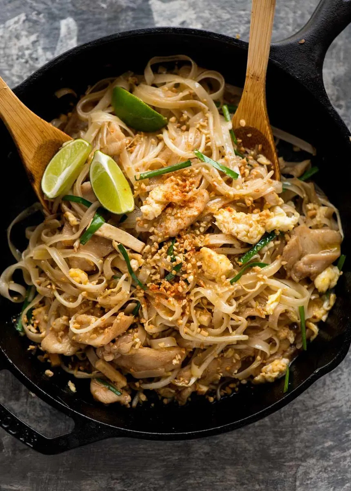

Southern Pad Thai

Pad Thai with a southern flavor
This pad thai could not be less authentic but my friends like to eat it
Use a saucepan instead of a skillet cause the jar sauce will make your skillet smell like fish!
Ingredients
- 3 boneless chicken thighs (cut into strips)
- A jar of pad thai sauce
- A bag of pad thai noodles
- 3 eggs
- Green onions (chopped)
- A couple handfuls of spinach
- Crushed peanuts
- Lime slices
- Seasonings
- Red Pepper Flakes
- Salt
- Pepper
- Onion Powder
- Garlic Powder
Steps
- Check instructions on noodles and check if you want to use the fast or slow instructions
- If slow, start noodles well before heating pan
- If fast, wait to put noodles into boiling water until you add chicken to pan
- Heat avocado oil in a large saucepan on high heat
- Add red pepper flakes and stir for 1 minute
- Season chicken, cut it, add it to the pan, and stir until cooked (you can put the lid on to make sure it gets the inside)
- Move the chicken to the side and crack the eggs in the open space. You may need to add more oil
- Add chopped onions and scramble the eggs in the space
- Add spinach and mix all together
- Add finished noodles and the whole jar of sauce
- Stir until all combined
- Add crushed peanuts and squeeze lemon slices
- Enjoy!
Home